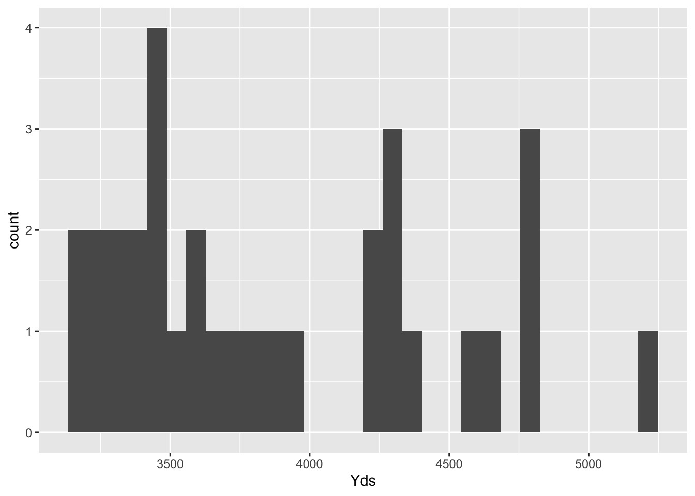
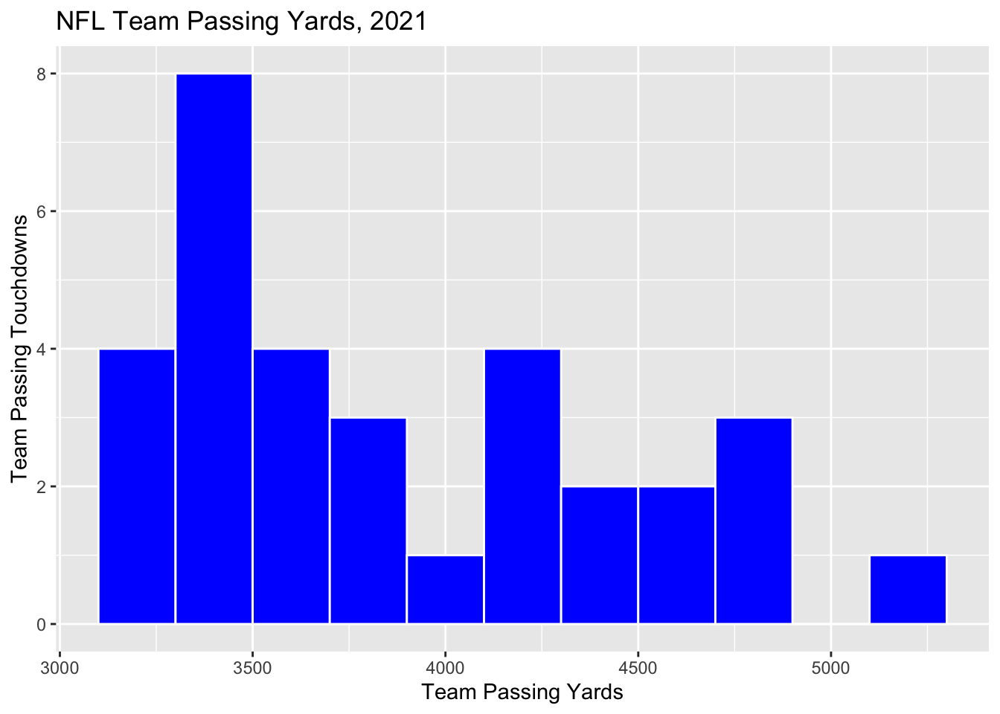
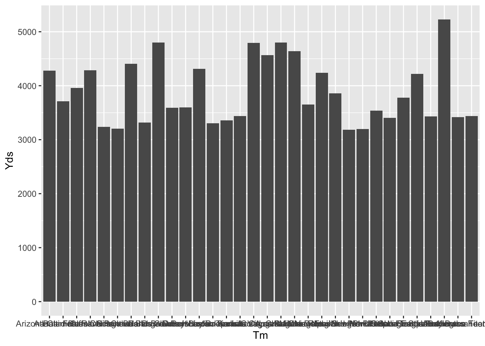
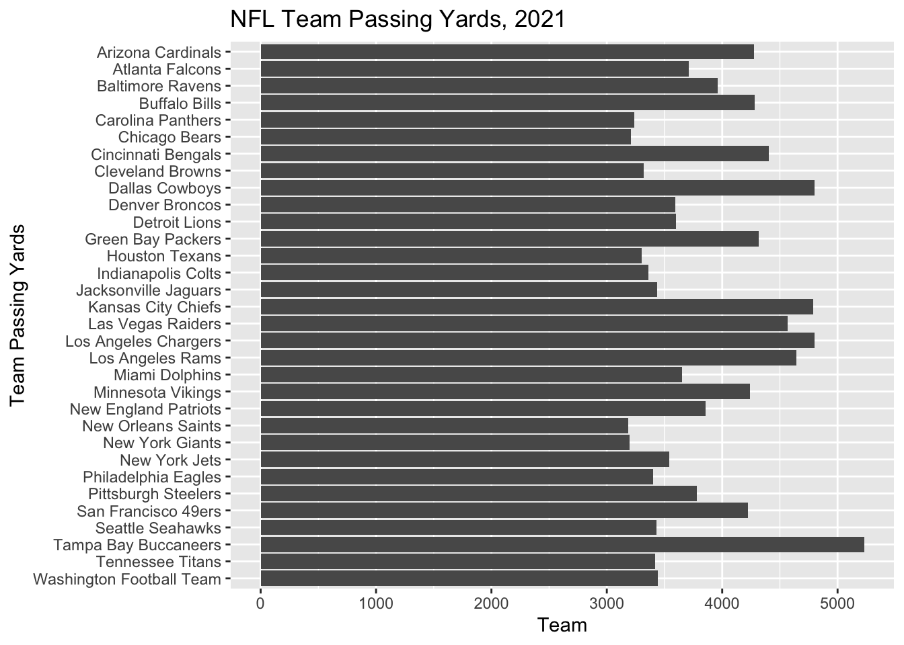
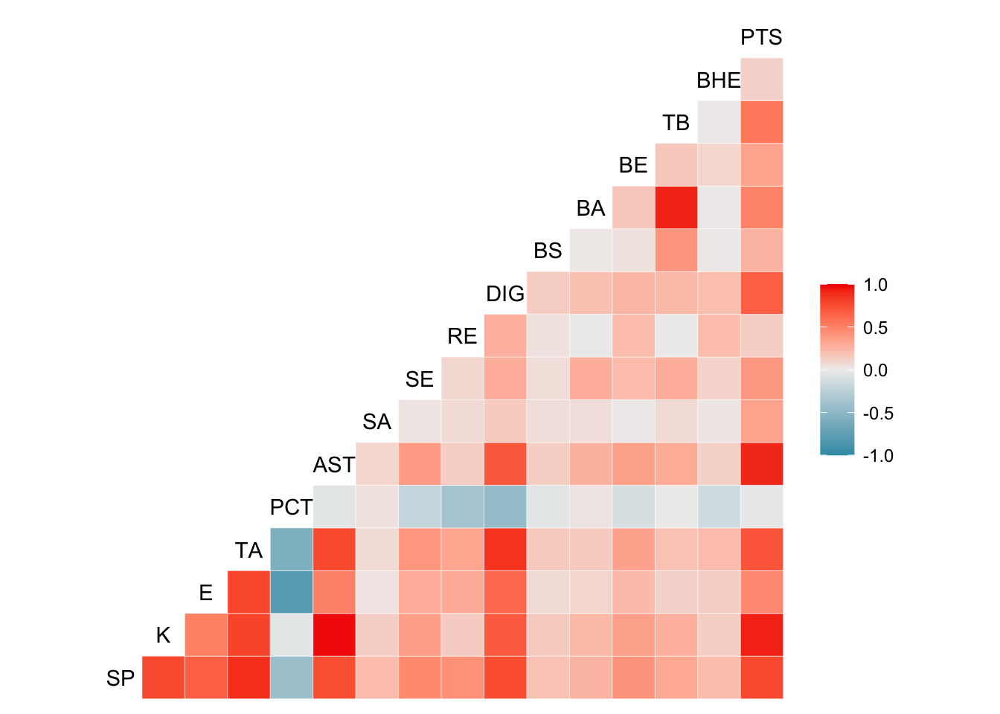
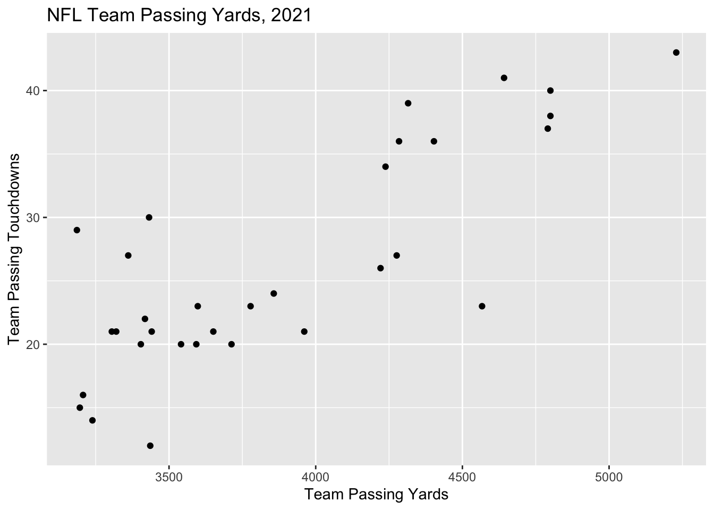
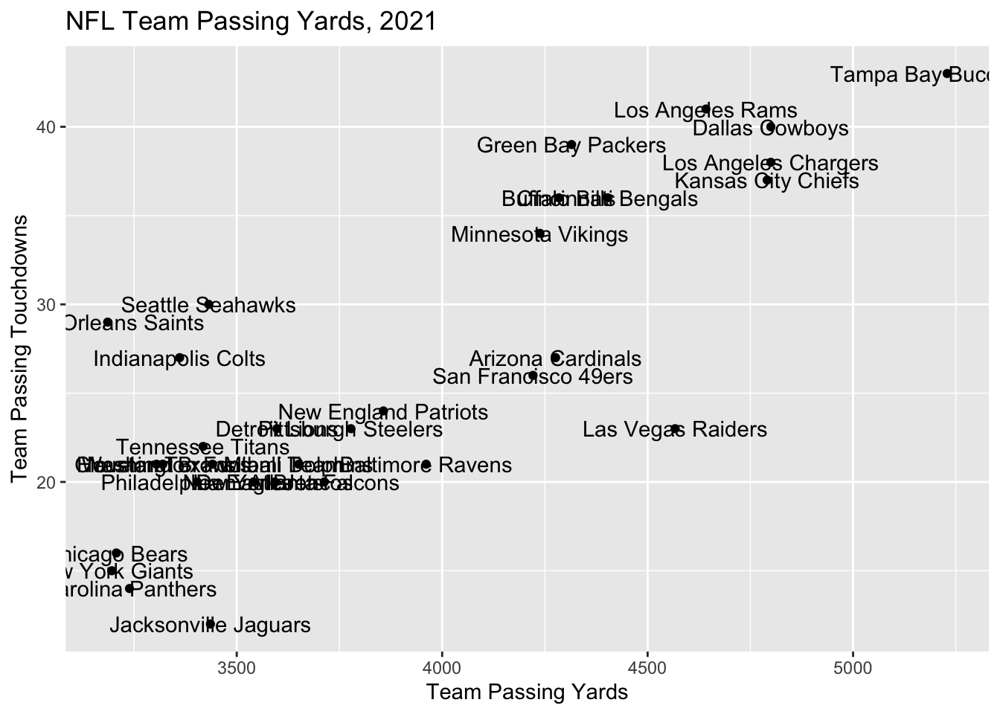

- About
- 1 Exploratory Data Analysis
- 2 Probability
- Chapter Preview
- 2.1 Definitions
- 2.2 Set Theory
- 2.3 Axioms, Properties, and Laws
- 2.4 Combinatorics
- 2.5 Odds and Gambling
- 2.6 Random Variables
- 2.7 Common Random Variables
- 2.8 Extra Stuff
- 2.8.1 Sets and Conditional Probability
- 2.8.2 Binomials and Multinomials
- 2.8.3 Expectation - Baseball
- 2.8.4 Basketball Scenario
- 2.8.5 Multiple Probability Distributions - Basketball
- 2.8.6 Law of Total Probability - Baseball
- 2.8.7 Multinomial Distribution - Baseball
- 2.8.8 Bayes - injured baseball player
- 3 Monte Carlo Simulation
- 4 Statistical Inference
- 5 Correlation
- 6 Linear Regression
- References
1.3 Visualizations
Conveying information visually is also an important part in providing a description of a dataset.
R provides some basic plotting functions such as plot, hist, and barplot. These plotting functions are simple and not always very clean looking.
In this class, we will use analogous plotting functions in ggplot2 that are much improved plotting functions.
If you have already installed the tidyverse package, it should have also installed the ggplot2 package.
# install.packages("tidyverse")
# Load the tidyverse package (which includes ggplot2)
library(tidyverse)Let’s load the file ``NFL_2021_Team_Passing.csv” which contains NFL Team Passing Statistics, 2021 from https://www.pro-football-reference.com/years/2021/index.htm#passing
library(readr)
NFL_2021_Team_Passing <- read_csv("data/NFL_2021_Team_Passing.csv")
head(NFL_2021_Team_Passing)## # A tibble: 6 × 25
## Rk Tm G Cmp Att `Cmp%` Yds TD `TD%` Int `Int%` Lng
## <dbl> <chr> <dbl> <dbl> <dbl> <dbl> <dbl> <dbl> <dbl> <dbl> <dbl> <dbl>
## 1 1 Tampa Bay… 17 492 731 67.3 5229 43 5.9 12 1.6 62
## 2 2 Los Angel… 17 443 674 65.7 4800 38 5.6 15 2.2 72
## 3 3 Dallas Co… 17 444 647 68.6 4800 40 6.2 11 1.7 73
## 4 4 Kansas Ci… 17 448 675 66.4 4791 37 5.5 13 1.9 75
## 5 5 Los Angel… 17 406 607 66.9 4642 41 6.8 18 3 79
## 6 6 Las Vegas… 17 429 628 68.3 4567 23 3.7 14 2.2 61
## # … with 13 more variables: `Y/A` <dbl>, `AY/A` <dbl>, `Y/C` <dbl>,
## # `Y/G` <dbl>, Rate <dbl>, Sk <dbl>, SKYds <dbl>, `Sk%` <dbl>, `NY/A` <dbl>,
## # `ANY/A` <dbl>, `4QC` <dbl>, GWD <dbl>, EXP <dbl>1.3.1 Histograms
Histograms are one of the most common and basic ways to visualize a dataset’s distribution of values. To make a histogram, you will use ggplot and geom_histogram.
Example 1.7 Create a histogram of the NFL Team Passing Yards in 2021.
NFL_2021_Team_Passing %>% ggplot(aes(x=Yds)) + geom_histogram()
Notice how %>% is used to pipe the dataset into ggplot. This is using the pipe function from the dplyr package.
By default, geom_histogram uses 30 bins but this is customizable. Let’s make the bins have a width of 200.
All good visualizations have good labels. Let’s improve the axis labels and give the figure a title.
NFL_2021_Team_Passing %>% ggplot(aes(x=Yds)) +
geom_histogram(binwidth = 200) +
labs(x="Team Passing Yards",y="Team Passing Touchdowns",title="NFL Team Passing Yards, 2021")
We also have numerous options to change the appearance of plots when using ggplot. Let’s change the bins color to blue and change the bin borders to white.
NFL_2021_Team_Passing %>% ggplot(aes(x=Yds)) +
geom_histogram(color = "white", fill = "blue", binwidth = 200) +
labs(x="Team Passing Yards", y="Team Passing Touchdowns", title="NFL Team Passing Yards, 2021")
1.3.2 Bar Plots
We can also create bar plots using ggplot using the geom_bar function.
Example 1.8 Create a bar plot with teams on the horizontal axis and passing touchdowns on the vertical axis.
NFL_2021_Team_Passing %>% ggplot(aes(x=Tm,y=Yds)) +
geom_bar(stat="identity")
The team labels are a complete mess. Let’s fix this and make some adjustments to the axis labels and figure title.
NFL_2021_Team_Passing %>% ggplot(aes(x=Tm,y=Yds)) +
geom_bar(stat="identity") +
labs(x="Team", y="Team Passing Yards",
title="NFL Team Passing Yards, 2021") +
theme(axis.text.x = element_text(angle = 90, vjust = 0.5, hjust=1))
We can flip this graph if we like as well. Note that when we flip the graph, our labels get in reverse ordering, so this can be fixed using fct_rev() which is part of the forcats package.
NFL_2021_Team_Passing %>%
ggplot(aes(x=fct_rev(Tm),y=Yds)) +
geom_bar(stat="identity") +
labs(x="Team Passing Yards",y="Team",title="NFL Team Passing Yards, 2021") +
coord_flip()
We can also order the teams from most team passing touchdowns to least using the forcats package.
NFL_2021_Team_Passing %>% mutate(Tm = fct_reorder(Tm,Yds)) %>%
ggplot(aes(x=Tm,y=Yds)) +
geom_bar(stat="identity") +
labs(x="Team Passing Yards",y="Team Passing Yards",title="NFL Team Passing Yards, 2021") +
coord_flip()
1.3.3 Scatter Plots
Another common and useful visualization is a scatterplot which shows the relationship between two numeric variable. In ggplot, you use geom_point().
Example 1.9 Create a scatterplot of Team Passing Yards and Team Passing Touchdowns from the NFL 2021 dataset.
NFL_2021_Team_Passing %>%
ggplot(aes(x=Yds,y=TD,label=Tm)) +
geom_point() +
labs(x="Team Passing Yards",y="Team Passing Touchdowns",title="NFL Team Passing Yards, 2021")
We may want to include team labels on this plot, however, it can get messy very quickly with a lot of points.
NFL_2021_Team_Passing %>%
ggplot(aes(x=Yds,y=TD,label=Tm)) +
geom_point() +
labs(x="Team Passing Yards",y="Team Passing Touchdowns",title="NFL Team Passing Yards, 2021") +
geom_text()
Many sports leagues have around 30 teams, so a clean scatterplot with labels can be tricky to make. Here are some options below.
# install ggrepel package
library(ggrepel)
NFL_2021_Team_Passing %>%
ggplot(aes(x=Yds,y=TD,label=Tm)) +
geom_point() +
labs(x="Team Passing Yards",y="Team Passing Touchdowns",title="NFL Team Passing Yards, 2021") +
geom_text_repel()## Warning: ggrepel: 6 unlabeled data points (too many overlaps). Consider
## increasing max.overlaps
NFL_2021_Team_Passing$Abbr <- c("TB","LAC","DAL","KC","LAR","LV","CIN","GB","BUF","AZ","MN","SF",
"BAL","NE","PIT","ATL","MIA","DET","DEN","NYJ","WAS","JAC","SEA",
"TEN","PHI","IND","CLE","HOU","CAR","CHI","NYG","NO")
NFL_2021_Team_Passing %>%
ggplot(aes(x=Yds,y=TD,label=Abbr)) +
geom_point() +
scale_x_continuous(limits=c(2750,5250)) +
labs(x="Team Passing Yards",y="Team Passing Touchdowns",title="NFL Team Passing Yards, 2021") +
geom_text_repel(box.padding = 0.3) 
1.3.4 Kable Tables
We can build nice tables using kableR and kableExtra. Let’s look at a few options.
# Use a smaller dataset as an example
NFL21 <- NFL_2021_Team_Passing %>% select(2:8) %>% slice_head(n = 5)
# Default output for tabular data
NFL21## # A tibble: 5 × 7
## Tm G Cmp Att `Cmp%` Yds TD
## <chr> <dbl> <dbl> <dbl> <dbl> <dbl> <dbl>
## 1 Tampa Bay Buccaneers 17 492 731 67.3 5229 43
## 2 Los Angeles Chargers 17 443 674 65.7 4800 38
## 3 Dallas Cowboys 17 444 647 68.6 4800 40
## 4 Kansas City Chiefs 17 448 675 66.4 4791 37
## 5 Los Angeles Rams 17 406 607 66.9 4642 41You can find additional details on customizing kable tables at https://cran.r-project.org/web/packages/kableExtra/vignettes/awesome_table_in_pdf.pdf
# Output using Kable (with no additional options)
library(kableExtra)
# Output using Kable and Kable-Styling and some additional options
NFL21 %>% kable() %>% kable_styling(latex_options="hold_position")| Tm | G | Cmp | Att | Cmp% | Yds | TD |
|---|---|---|---|---|---|---|
| Tampa Bay Buccaneers | 17 | 492 | 731 | 67.3 | 5229 | 43 |
| Los Angeles Chargers | 17 | 443 | 674 | 65.7 | 4800 | 38 |
| Dallas Cowboys | 17 | 444 | 647 | 68.6 | 4800 | 40 |
| Kansas City Chiefs | 17 | 448 | 675 | 66.4 | 4791 | 37 |
| Los Angeles Rams | 17 | 406 | 607 | 66.9 | 4642 | 41 |
If you are going to use kable tables frequently in a document, you can write a short function to set your default options. After I ran the function below, the function kt will produce a kable table with my options set.
# kable table global setup
kt <- function(data) {
knitr::kable(data, digits=3, align=c('l','c','c','c','c','c','c','c','c')) %>% kable_styling(bootstrap_options='striped', latex_options='HOLD_position', full_width = F, position = "center")
}NFL21 %>% kt()| Tm | G | Cmp | Att | Cmp% | Yds | TD |
|---|---|---|---|---|---|---|
| Tampa Bay Buccaneers | 17 | 492 | 731 | 67.3 | 5229 | 43 |
| Los Angeles Chargers | 17 | 443 | 674 | 65.7 | 4800 | 38 |
| Dallas Cowboys | 17 | 444 | 647 | 68.6 | 4800 | 40 |
| Kansas City Chiefs | 17 | 448 | 675 | 66.4 | 4791 | 37 |
| Los Angeles Rams | 17 | 406 | 607 | 66.9 | 4642 | 41 |